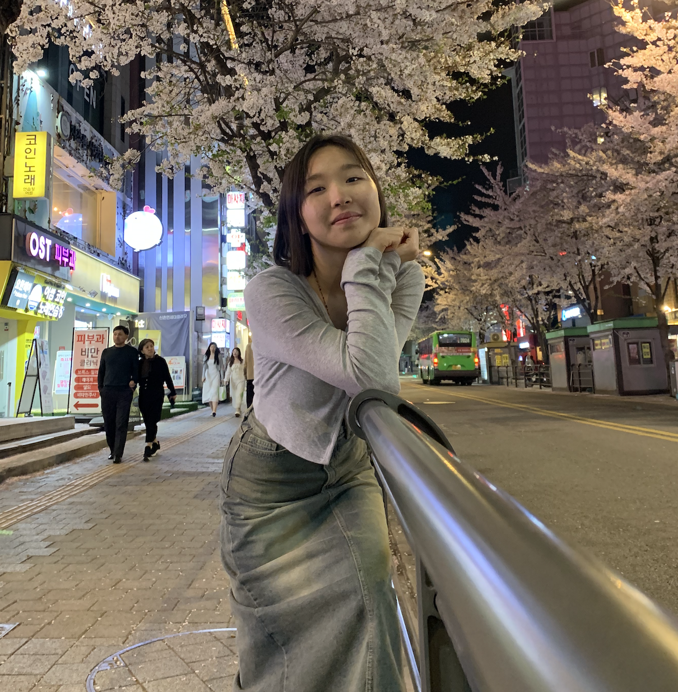

Associate Producer
The Dao in Thao 2026
A feature documentary following comedian and solo performer Thao P. Nguyen as she creates her next one-woman show at Stage Werx in San Francisco's Mission District — capturing her over two years as she crafts new material shaped by her life as a queer, Asian American refugee, daughter, wife, and mother.
Visit Project Site →